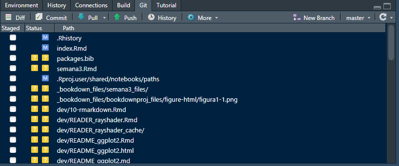

4 Rmarkdown y control de versiones
4.1 Rmarkdown
4.1.1 Introducción
Este documento se ha generado empleando Markdown y R. RMarkdown es recomendable para difundir análisis realizados con R en formato HTML, PDF y DOCX (Word), entre otros.
Markdown se diseñó inicialmente para la creación de páginas web a partir de documentos de texto de forma sencilla y rápida. Es lo que se conoce como un lenguaje de marcado ligero, tiene unas reglas sintácticas muy simples y se busca principalmente la facilidad de lectura. Posteriormente se fueron añadiendo funcionalidades, por ejemplo para incluir opciones de publicación en muchos otros formatos.
La implementación original de Markdown es de John Gruber, pero actualmente están disponibles múltiples dialectos. RMarkdown utiliza las extensiones de la sintaxis proporcionada por Pandoc, y adicionalmente permite la inclusión de código R.
Al renderizar un fichero RMarkdown se generará un documento que incluye el código R y los resultados incrustados en el documento1.
En RStudio basta con hacer clic en el botón Knit. En R se puede emplear la funcion render del paquete rmarkdown (por ejemplo render("Informe.Rmd")). También se puede abrir directamente el informe generado:
A continuación se darán algunos detalles sobre RMarkdown (y las extensiones Markdown de Pandoc que admite: notas al pie de página, tablas, citas, ecuaciones LaTeX, …). Para más información (incluyendo introducciones a Markdown y RMarkdown), se recomienda consultar alguna de las numerosas fuentes disponibles, comenzando por la web oficial http://rmarkdown.rstudio.com/.
También se dispone de información en la ayuda de RStudio:
- Help > Markdown Quick Reference
- Help > Cheatsheets > R Markdown Cheat Sheet
- Help > Cheatsheets > R Markdown Reference Guide
Otras fuentes permiten obtener documentación más detallada, como por ejemplo:
- Web del paquete
knitr(Xie 2018): https://yihui.name/knitr. - Xie, Allaire, and Grolemund (2018) : R Markdown: The Definitive Guide, https://bookdown.org/yihui/rmarkdown/.
- Extensiones RMarkdown de Pandoc: https://rmarkdown.rstudio.com/authoring_pandoc_markdown.html%23raw-tex.
4.1.2 Sintaxis de Markdown
Como ya se comentó la sintaxis de Markdown es muy secilla. El texto no marcado se renderiza como texto normal aunque es necesario dejar una línea en blanco para insertar un salto de línea. Las principales reglas de Markdown se sumarizan en la siguiente tabla:
| Escribir | o alternativamente | para obtener … |
|---|---|---|
|
|
Los distintos niveles de encabezados |
|
|
Cursiva |
|
|
Negrita |
|
|
Enlace |
|
|
 |
|
|
|
|
|
|
|
|
|
|
|
Regla horizontal |
|
código en línea entre
comillas invertidas |
|
|
|
|
Es muy recomendable dejar siempre una linea de separación entre elementos distintos consecutivos.
4.1.3 Inclusión de código R
Se puede incluir código R entre los delimitadores ```{r} y ```. Por defecto, se mostrará el código, se evaluará y se mostrarán los resultados justo a continuación. Por ejemplo el siguiente código:
produce:
## mpg cyl disp
## Mazda RX4 21.0 6 160
## Mazda RX4 Wag 21.0 6 160
## Datsun 710 22.8 4 108
## Hornet 4 Drive 21.4 6 258
## Hornet Sportabout 18.7 8 360
## Valiant 18.1 6 225## mpg cyl disp
## Min. :10.40 Min. :4.000 Min. : 71.1
## 1st Qu.:15.43 1st Qu.:4.000 1st Qu.:120.8
## Median :19.20 Median :6.000 Median :196.3
## Mean :20.09 Mean :6.188 Mean :230.7
## 3rd Qu.:22.80 3rd Qu.:8.000 3rd Qu.:326.0
## Max. :33.90 Max. :8.000 Max. :472.0En RStudio pulsando “Ctrl + Alt + I” o en el icono correspondiente se incluye un trozo de código.
También se puede incluir código en línea empleando r código, por ejemplo r 2 + 2 produce 4.
4.1.3.1 Gráficos
Si el código genera un gráfico, este se incluirá en el documento justo después de donde fué generado(por defecto). Por ejemplo el siguiente gráfico:

se generó empleando:
aunque no se mostró previamente el código al haber establecido la opción ```{r, echo=FALSE}.
4.1.3.2 Opciones de bloques de código
Los trozos de código pueden tener nombre y opciones, se establecen en la cabecera de la forma ```{r nombre, op1, op2}. Para un listado de las opciones disponibles ver http://yihui.name/knitr/options (en la Sección 2.6 del libro de RMarkdown se incluye un resumen).
En RStudio se puede pulsar en los iconos en la parte superior derecha del bloque de código para establecer opciones, ejecutar todo el código anterior o sólo el correspondiente trozo.
Algunas opciones sobre evaluación y resultados:
eval: si=FALSEno se evalúa el código.echo: si=FALSEno se muestra el código.include: si=FALSEno se muestra el código ni ningún resultado.message, warning, error: oculta el correspondiente tipo de mensaje de R (los errores o warnings se mostrarán en la consola).cache: si se activa, guarda los resultados de la última evaluación y se reutilizan si no cambió el bloque de código (más detalles aquí). Puede ser de utilidad durante la redacción del documento para reducir el tiempo de renderizado (usándolo con cuidado y desactivándolo al terminar).
Algunas opciones sobre resultados gráficos:
fig.width, fig.height, fig.dim: dimensiones del dispositivo gráfico de R (no confundir con el tamaño del resultado), e.g.fig.width = 5.out.width, out.heigh: tamaño del gráfico, e.g.='80%'.fig.align:='left', 'center', 'right', establece la alineación.fig.cap: leyenda de la figura2.dev: dispositivo gráfico de R, por defecto='pdf'para LaTeX y'png'para HTML. Otras opciones son'svg'o'jpeg'.
Para establecer valores por defecto para todos los bloques de código se suele incluir uno de configuración al principio del documento, por ejemplo:
4.1.4 Tablas
Las tablas en Markdown son de la forma:
| First Header | Second Header |
| ------------- | ------------- |
| Row1 Cell1 | Row1 Cell2 |
| Row2 Cell1 | Row2 Cell2 |Por ejemplo:
| Variable | Descripción |
|---|---|
| mpg | Millas / galón (EE.UU.) |
| cyl | Número de cilindros |
| disp | Desplazamiento (pulgadas cúbicas) |
| hp | Caballos de fuerza bruta |
| drat | Relación del eje trasero |
| wt | Peso (miles de libras) |
| qsec | Tiempo de 1/4 de milla |
| vs | Cilindros en V/Straight (0 = cilindros en V, 1 = cilindros en línea) |
| am | Tipo de transmisión (0 = automático, 1 = manual) |
| gear | Número de marchas (hacia adelante) |
| carb | Número de carburadores |
Para convertir resultados de R en tablas de una forma simple se puede emplear la función ktable del paquete knitr. Por ejemplo la Tabla anterior se obtuvo mediante el siguiente código:
Otros paquetes proporcionan opciones adicionales: xtable, stargazer, pander, tables y ascii.
4.2 Cabecera YAML
En un fichero RMarkdown se puede incluir metadatos en una cabecera en formato YAML (YAML Ain’t Markup Language, https://en.wikipedia.org/wiki/YAML), comenzando y terminando con tres guiones ---.
Los metadatos de YAML son típicamente opciones de renderizado consitentes en pares de etiquetas y valores separados por dos puntos.
Por ejemplo:
---
title: "Creación de contenidos con RMarkdown"
author: "Roy Yali"
date: 2021-06-11
output: html_document
---Aunque no siempre es necesario, se recomienda que los valores de texto se introduzcan entre comillas (se puede incluir código R en línea, como por ejemplo 2021-06-11 para obtener la fecha actual). Para valores lógicos se puede emplear yes/true y no/false para verdadero y falso, respectivamente.
Los valores pueden ser vectores, por ejemplo las siguientes opciones son equivalentes:
También pueden ser listas, añadiendo una sangría de dos espacios (importante):
El campo output permite especificar el formato y las opciones de salida (por defecto se empleará la primera). Empleando este campo también se pueden especificar opciones gráficas para los bloques de código, por ejemplo:
La mayoría de los campos YAML son opciones que el paquete rmarkdown le pasa a Pandoc.
Un ejemplo adicional3:
---
title: "Creación de contenidos con RMarkdown"
subtitle: "Curso de introducción a R"
author:
- name: "Rubén Fernández Casal (ruben.fcasal@udc.es)"
affiliation: "Universidade da Coruña"
- name: "Tomás R. Cotos Yáñez (tcotos@uvigo.es)"
affiliation: "Universidade de Vigo"
date: "2021-06-11"
logo: rmarkdown.png
output:
html_document:
toc: yes # incluir tabla de contenido
toc_float: yes # toc flotante a la izquierda
number_sections: yes # numerar secciones y subsecciones
code_folding: hide # por defecto el código aparecerá oculto
mathjax: local # emplea una copia local de MathJax, hay que establecer:
self_contained: false # las dependencias se guardan en ficheros externos
lib_dir: libs # directorio para librerías (Bootstrap, MathJax, ...)
pdf_document:
toc: yes
toc_depth: 2
keep_tex: yes # conservar fichero latex
---Como se puede deducir del ejemplo anterior, en el formato YAML podemos incluir comentarios con el carácter #
(por ejemplo para no emplear alguna de las opciones sin borrarla del encabezado).
En el Capítulo 3 del libro de RMarkdown se tiene información detallada sobre las opciones de los distintos formatos de salida (sobre ficheros HTML aquí y sobre PDF/LaTeX aquí).
4.2.1 Spin
Una forma rápida de crear este tipo de informes a partir de un fichero de código R es emplear la funcion
spin del paquete knitr (ver p.e. http://yihui.name/knitr/demo/stitch).
Para ello se debe comentar todo lo que no sea código R de una forma especial:
El texto RMarkdown se comenta con
#'. Por ejemplo:#' # Este es un título de primer nivel #' ## Este es un título de segundo nivelLas opciones de un trozo de código se comentan con
#+. Por ejemplo:#+ setup, include=FALSE opts_chunk$set(comment=NA, prompt=TRUE, dev='svg', fig.height=6, fig.width=6)
Para generar el informe se puede emplear la funcion spin del paquete knitr. Por ejemplo: spin("dev/knitr-spin.R").
También se podría abrir directamente el informe generado:
browseURL(url = knitr::spin("dev/knitr-spin.R"))Pero puede ser recomendable renderizarlo con rmarkdown:
library(rmarkdown)
browseURL(url = render(knitr::spin("dev/knitr-spin.R", knit = FALSE)))En RStudio basta con pulsar “Ctrl + Shift + K” o seleccionar File > Knit Document (en las últimas versiones también File > Compile Notebook o hacer clic en el icono correspondiente).
Por ejemplo, si se quiere convertir la salidas de un fichero de código de R a formato LaTeX (para añadirlas fácilmente a un documento en este formato), bastaría con incluir una cabecera de la forma:
4.2.2 Extensiones RMarkdown de pandoc
Como ya se comentó, RMarkdown utiliza la sintaxis extendida proporcionada por Pandoc.
Por ejemplo, se pueden añadir subíndices y superíndices con sub~índices~ y super^índices^,
y notas al pie con ^[texto].
Podemos incluir expresiones matemáticas en formato LateX:
En linea escribiendo la expresión latex entre dos símbolos de dolar, por ejemplo
$\alpha, \beta, \gamma, \delta$resultaría en \(\alpha, \beta, \gamma, \delta\).En formato ecuación empleando dos pares de símbolos de dolar. Por ejemplo:
$$\Theta = \begin{pmatrix}\alpha & \beta\\ \gamma & \delta \end{pmatrix}$$resultaría en: \[\Theta = \begin{pmatrix}\alpha & \beta\\ \gamma & \delta \end{pmatrix}\]
También admite bibliografía, ver p.e. https://rmarkdown.rstudio.com/authoring_bibliographies_and_citations.html. Lo más cómodo puede ser emplear un archivo de bibliografía en formato BibTeX, lo que se describe con detalle aquí. Será necesario añadir un campo bibliography en la cabezera YAML, por ejemplo:
Suponiendo que en el directorio de trabajo están los ficheros de bibliografía bibliografia.bib y de estilo apa.csl (ver http://citationstyles.org/, desde donde se pueden descargar distintos archivos de estilo).
Las referencias en el texto RMarkdown se incluyen con @referencia o [@referencia]. Pandoc generará el listado de referencias al final del documento, por lo que nos puede interesar insertar una última sección # Bibliografía {-} al generar documentos HTML (en PDF se hará automáticamente al emplear LaTeX). En RStudio se puede instalar el “Addin” citr para insertar citas a referencias bibliográficas en formato BibTeX.
Para más detalles de las extensiones de Pandoc ver por ejemplo https://rmarkdown.rstudio.com/authoring_pandoc_markdown.html%23raw-tex o el manual de Pandoc https://pandoc.org/MANUAL.html.
4.3 Control de versiones
4.3.1 Git
Git es un sistema de control de versiones. Cuando un repositorio está bajo el control de versiones de git, se guarda la información sobre todos los cambios realizados, guardados y confirmados en cualquier archivo no ignorado en un repositorio. Esto le permite volver a versiones anteriores del repositorio y buscar en el historial todas las confirmaciones realizadas en cualquier archivo rastreado en el repositorio.
Si está trabajando con otros, usar el control de versiones de git le permite ver cada cambio realizado en el código, quién lo hizo y por qué (a través de los mensajes de confirmación).
Necesitarás git en tu computadora para crear repositorios de git locales que puedas sincronizar con los repositorios de GitHub. Como R, git es de código abierto. Puedes descargarlo para diferentes sistemas operativos.
4.3.1.1 Configuración
Después de descargar git pero antes de usarlo, debes configurarlo. Por ejemplo, debe asegurarse de que tenga su nombre y dirección de correo electrónico. Puede configurar git desde un shell bash (para Linux o Mac, puede usar “Terminal”, mientras que para PC puede usar GitBash, que viene con la instalación de git).
Puede usar las funciones de configuración de git para configurar su versión de git. Dos cambios que debe realizar son incluir su nombre y dirección de correo electrónico como nombre de usuario y correo electrónico de usuario. Por ejemplo, el siguiente código, si se ejecuta en un shell bash, configuraría una cuenta de git para un usuario llamado “Roy Yali” con su respectiva dirección de correo electrónico:
git config --global user.name "Roy Yali"
git config --global user.email "roy.yali@unmsm.edu.pe"Una vez que haya instalado git, debe reiniciar RStudio para que RStudio pueda identificar que git ahora está disponible. A menudo, basta con reiniciar RStudio. Sin embargo, en algunos casos, es posible que deba seguir algunos pasos más para activar git en RStudio. Para hacer esto, vaya a “RStudio” -> “Preferencias” -> “Git / SVN”. Elija “Habilitar control de versiones”. Si RStudio no encuentra automáticamente su versión de git en el cuadro “Ejecutable de Git” (sabrá que no lo ha hecho si ese cuadro está en blanco), busque su archivo ejecutable de git usando el botón “Examinar” al lado de ese cuadro. Si no está seguro de dónde está guardado su ejecutable git, intente abrir un shell bash y ejecutar qué git, que debería darle la ruta del archivo si tiene git instalado.
4.3.2 Inicializando un repositorio
Puede inicializar un repositorio de git utilizando comandos desde un shell bash o directamente desde RStudio. Primero, para inicializar un repositorio de git desde un shell bash, siga los siguientes pasos:
- Utilice un shell (“Terminal” en Linux o Mac) para navegar hasta ese directorio. Puede usar
cdpara hacer eso (similar asetwden R). - Una vez que esté en el directorio, primero verifique que no sea ya un repositorio de
git. Para hacer eso, ejecutegit status. Si recibe el mensajefatal: No es un repositorio de git (o cualquiera de los directorios principales): .git, todavía no es un repositorio de git. Si no obtiene un error degit status, el directorio ya es un repositorio, por lo que no necesita inicializarlo. - Si el directorio aún no es un repositorio de git, ejecute
git initpara inicializarlo como repositorio. Por ejemplo, si quisiera crear un directorio llamado “example_analysis”, que es un subdirectorio directo de mi directorio de inicio, un repositorio de git, podría abrir un shell y ejecutar:
cd ~ / example_analysis
git initTambién puede inicializar un directorio como un repositorio de git a través de R Studio. Para hacer eso, siga los siguientes pasos:
- Convierta el directorio en un proyecto R. Si el directorio es un paquete R, es probable que ya tenga un archivo
.Rprojy también un proyecto R. Si el directorio no es un proyecto R, puede convertirlo en uno de RStudio yendo a “Archivo” -> “Nuevo proyecto” -> “Directorio existente”, y luego navegue hasta el directorio en el que le gustaría hacer un proyecto R . - Abra el proyecto R.
- Vaya a “Herramientas” -> “Control de versiones” -> “Configuración del proyecto”.
- En el cuadro de “Sistema de control de versiones”, elija “Git”.
I> Si no ve “Git” en el cuadro de “Sistema de control de versiones”, significa que no tiene git instalado en su computadora o que RStudio no pudo encontrarlo. Si es así, consulte las instrucciones anteriores para asegurarse de que RStudio haya identificado el ejecutable git.
Una vez que inicialices el proyecto como un repositorio de git, deberías tener una ventana “Git” en uno de tus paneles de RStudio (panel superior derecho por defecto). A medida que realice y guarde cambios en los archivos, aparecerán en esta ventana para que los confirme. Por ejemplo, en la siguiente figura, se muestra como se ve la ventana de Git en RStudio cuando hay cambios en dos archivos que aún no se han confirmado. 
4.3.3 Commiting
Cuando desee que git registre los cambios, confirme los archivos con los cambios. Cada vez que se compromete, debe incluir un breve mensaje de confirmación con información sobre los cambios. Puede realizar confirmaciones desde un shell. Sin embargo, el flujo de trabajo más sencillo para un proyecto de R, incluido un directorio de paquetes de R, es hacer que git se comprometa directamente desde el entorno de RStudio.
Para realizar una confirmación desde RStudio, haga clic en el botón “Confirmar” en la ventana de Git.

Ejemplo de un commit en RStudio
En esta ventana, para confirmar cambios:
- Haga clic en las casillas junto a los nombres de archivo en el panel superior izquierdo para seleccionar los archivos a confirmar.
- Si lo desea, puede utilizar la parte inferior de la ventana para ver los cambios que está realizando en cada archivo.
- Escribe un mensaje en el cuadro “Confirmar mensaje” en el panel superior derecho. Mantenga el mensaje en una línea en este cuadro si puede. Si necesita explicar más, escriba un mensaje corto de una línea, omita una línea y luego escriba una explicación más larga.
- Haga clic en el botón “Confirmar” a la derecha.
- Una vez que confirme los cambios a los archivos, desaparecerán de la ventana de Git hasta que realice y guarde más cambios.
4.3.4 Historial de registros
En la parte superior izquierda de la ventana Confirmar, puede cambiar a “Historial”. Esta ventana le permite explorar el historial de confirmaciones del repositorio. La siguiente figura muestra un ejemplo de esta ventana. La parte superior de esta ventana enumera las confirmaciones en el repositorio, de la más reciente a la menos. El mensaje de confirmación y el autor se muestran para cada confirmación. Si hace clic en una confirmación, puede utilizar el panel inferior para ver los cambios realizados en ese archivo con una confirmación específica.

4.3.5 Conectando repositorio local con repositorio en Github
GitHub te permite alojar repositorios de git en línea. Esto le permite:
- Trabaja de forma colaborativa en un repositorio compartido
- Bifurque el repositorio de otra persona para crear su propia copia que pueda usar y cambiar como desee
- Sugerir cambios en los repositorios de otras personas a través de solicitudes de extracción
Para hacer algo de esto, necesitará una cuenta de GitHub. Puede registrarse en https://github.com. Una cuenta gratuita está bien siempre y cuando no le importe que todos sus repositorios sean “Públicos” (visibles para cualquier persona).
La unidad básica para trabajar en GitHub es el repositorio. Un repositorio es un directorio de archivos con algunos archivos complementarios que guardan información adicional sobre el directorio. Mientras que los proyectos de R tienen esta información adicional guardada como un archivo “.RProj”, los repositorios de git tienen esta información en un directorio llamado “.git”.
I> Debido a que esta ruta del directorio .git comienza con un punto, no se mostrará en muchas de las formas en que enumera los archivos en un directorio. Desde un shell bash, puede ver archivos que comienzan con. ejecutando ls -a desde ese directorio.
Si tiene un directorio local que le gustaría enviar a GitHub, estos son los pasos para hacerlo. Primero, debe asegurarse de que el directorio esté bajo el control de versiones de git. Consulte las notas anteriores sobre la inicialización de un repositorio. A continuación, debe crear un repositorio vacío en GitHub para sincronizar con su repositorio local. Para hacer eso:
- En GitHub, haga clic en el “+” en la esquina superior derecha (“Crear nuevo”).
- Elija “Crear nuevo repositorio”.
- Dale a tu repositorio el mismo nombre que el directorio local al que te gustaría conectarlo. Por ejemplo, si desea conectarlo a un directorio llamado “example_analysis” en su computadora, nombre el repositorio “example_analysis”. (No es necesario que el nombre de su repositorio de GitHub sea idéntico al nombre de su repositorio local, pero facilitará las cosas).
- Deje todo lo demás como está (a menos que desee agregar una breve descripción en el cuadro “Descripción”). Haga clic en “Crear repositorio” en la parte inferior de la página.
Ahora está listo para conectar los dos repositorios. Primero, debe cambiar algunas configuraciones en RStudio para que GitHub reconozca que se puede confiar en su computadora, en lugar de pedirle su contraseña cada vez. Haga esto agregando una clave SSH de RStudio a su cuenta de GitHub con los siguientes pasos:
- En RStudio, vaya a “RStudio” -> “Preferencias” -> “Git / svn”. Elija “Crear clave RSA”.
- Haga clic en “Ver clave pública”. Copia todo lo que aparece.
- Vaya a su cuenta de GitHub y navegue hasta “Configuración”. Haga clic en “Claves SSH y GPG”.
- Haga clic en “Nueva clave SSH”. Nombra la tecla con algo como “mylaptop”. Pegue su clave pública en el “Cuadro de clave”.
4.3.6 Sincronizar RStudio y GitHub
Ahora está listo para enviar su repositorio local al repositorio de GitHub vacío que creó.
- Abra un shell y navegue hasta el directorio que desea enviar. (Puede abrir un shell desde RStudio usando el botón de engranaje en la ventana de Git).
- Agregue el repositorio de GitHub como una rama remota con el siguiente comando (esto da un ejemplo para agregar un repositorio de GitHub llamado “ex_repo” en mi cuenta de GitHub, “geanders”):
git remote add origin git@github.com:geanders/ex_repo.gitComo nota, cuando crea un repositorio en GitHub, GitHub proporcionará un código de git sugerido para agregar el repositorio de GitHub como la rama remota de “origen” a un repositorio. Ese código es similar al código que se muestra arriba, pero usa “https://github.com” en lugar de “git@github.com”; este último tiende a funcionar mejor con RStudio.
- Envía el contenido del repositorio local al repositorio de GitHub.
git push -u origin masterPara extraer un repositorio que ya existe en GitHub y al que tiene acceso (o que ha bifurcado y por lo tanto tiene acceso a la rama bifurcada), primero use cd desde un shell bash en su computadora personal para moverse al directorio donde quiero poner el repositorio. Luego, use la función git clone para clonar el repositorio localmente. Por ejemplo, para clonar un repositorio de GitHub llamado “ex_repo” publicado en una cuenta de GitHub con el nombre de usuario janedoe, puede ejecutar:
git clone git@github.com:janedoe/ex_repo.gitUna vez que haya vinculado un proyecto de R local con un repositorio de GitHub, puede presionar y extraer confirmaciones usando la flecha azul hacia abajo (extraer de GitHub) y la flecha verde hacia arriba (presionar hacia GitHub) en la ventana de Git en RStudio (ver Figura ?? ver ejemplos de estas flechas).
GitHub te ayuda a trabajar con otros en el código. Hay dos formas principales de hacer esto:
- Colaboración: diferentes personas tienen la capacidad de empujar y extraer directamente desde y hacia el mismo repositorio. Cuando una persona empuja un cambio al repositorio, otros colaboradores pueden obtener los cambios inmediatamente al extraer las últimas confirmaciones de GitHub en su repositorio local.
- Bifurcación: diferentes personas tienen sus propios repositorios de GitHub, cada uno vinculado a su propio repositorio local. Cuando una persona envía cambios a GitHub, solo realiza cambios en su propio repositorio. La persona debe enviar una solicitud de extracción a la bifurcación del repositorio de otra persona para compartir los cambios.
4.3.7 Pull request
Puede utilizar una solicitud de extracción para sugerir cambios en un repositorio que no es de su propiedad o que no tiene permiso para cambiar directamente. Siga los siguientes pasos para sugerir cambios en el repositorio de otra persona:
- Bifurcar el repositorio
- Realizar cambios (localmente o en GitHub)
- Guarde sus cambios y confíelos
- Envíe una solicitud de extracción al repositorio original
- Si no hay ningún conflicto y al propietario del repositorio original le gustan tus cambios, puede fusionarlos directamente en el repositorio original. Si hay conflictos, estos deben resolverse antes de que se pueda fusionar la solicitud de extracción.
También puede utilizar solicitudes de extracción dentro de sus propios repositorios. Algunas personas crearán una solicitud de extracción cada vez que tengan un gran problema que quieran solucionar en uno de sus repositorios.
En GitHub, cada repositorio tiene una pestaña “Solicitudes de extracción” donde puede administrar las solicitudes de extracción (enviar una solicitud de extracción a otra bifurcación o fusionar la solicitud de extracción de otra persona para su bifurcación).
4.3.8 Merge conflicts
En algún momento, si está utilizando GitHub para colaborar en el código, obtendrá conflictos de fusión. Esto sucede cuando dos personas han cambiado el mismo código de dos formas diferentes al mismo tiempo.
Por ejemplo, digamos que dos personas están trabajando en versiones locales del mismo repositorio, y la primera persona cambia una línea a mtcars [1,] mientras que la segunda persona cambia la misma línea a head (mtcars, 1). La segunda persona envía sus confirmaciones a la versión de GitHub del repositorio antes de que lo haga la primera persona. Ahora, cuando la primera persona extraiga las últimas confirmaciones en el repositorio de GitHub, tendrá un conflicto de fusión para esta línea. Para poder enviar una versión final, la primera persona deberá decidir qué versión del código usar y confirmar una versión del archivo con ese código.
Si hay conflictos de combinación, se mostrarán así en el archivo:
<<<<<<< HEAD
mtcars[1, ]
=======
head(mtcars, 1)
>>>>>>> remote-branchPara solucionarlos, busque todos estos puntos en archivos con conflictos (Ctrl-F puede ser útil para esto), elija el código que desea usar y elimine todo lo demás. Para el conflicto de ejemplo, podría resolverse cambiando el archivo de esto:
<<<<<<< HEAD
mtcars[1, ]
=======
head(mtcars, 1)
>>>>>>> remote-branchA esto:
head(mtcars, 1)Ese conflicto de fusión ahora está resuelto. Una vez que resuelva todos los conflictos de combinación en todos los archivos del repositorio, puede guardar y confirmar los archivos.
Estos conflictos de fusión pueden surgir en algunas situaciones:
- Obtienes confirmaciones de la rama de GitHub de un repositorio en el que has estado trabajando localmente.
- Alguien envía una solicitud de extracción para uno de sus repositorios y usted ha actualizado parte del código entre el momento en que la persona bifurcó el repositorio y envió la solicitud de extracción.
4.3.9 Resumen
El código R se puede mantener bajo control de versiones usando git, y RStudio ofrece una funcionalidad conveniente para trabajar con un directorio bajo el control de versiones de git. También se puede enviar un directorio bajo el control de versiones de git a GitHub, que proporciona una plataforma útil para compartir y colaborar en el código.
4.4 ¿Cómo puedo hacer un README?
4.5 Instalar paquetes desde GitHub (Devtools, remotes)
Xie, Yihui. 2018. Knitr: A General-Purpose Package for Dynamic Report Generation in R. https://CRAN.R-project.org/package=knitr.
Xie, Yihui, JJ Allaire, and Garrett Grolemund. 2018. R Markdown: The Definitive Guide. CRC Press. https://bookdown.org/yihui/rmarkdown/.
References
Xie, Yihui. 2018. Knitr: A General-Purpose Package for Dynamic Report Generation in R. https://CRAN.R-project.org/package=knitr.
Xie, Yihui, JJ Allaire, and Garrett Grolemund. 2018. R Markdown: The Definitive Guide. CRC Press. https://bookdown.org/yihui/rmarkdown/.
Se llama al paquete
knitrpara “tejer” el código de R y los resultados en un fichero Markdown, que posteriormente es procesado con pandoc↩︎Si se genera un documento en PDF/LaTeX el gráfico se mostrará en un entorno flotante y se puede ajustar la posición empleando la opción
fig.pos(por ejemplo,fig.pos = '!htb').↩︎Puede ser interesante ejecutar
str(rmarkdown::html_document())para ver un listado de todas las opciones disponibles dehtml_document↩︎